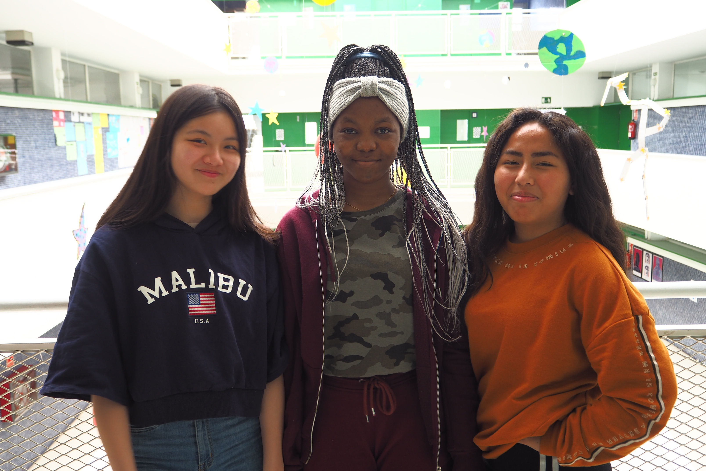

Proyecto Migracions'19
Barres i ones
Proyecto Migracions'19
Barres i ones
Biografia
Entrevista
Plats
Recepta
Alumnes

Tamara Angono, Wendy Caren y Wenhui Ye
Somos un grupo de 3º de ESO y entrevistamos a una profesora que conocemos de la academia de inglés y que se llama Claudia y tiene 32 años. Nació en Mozambique y ahora vivo aquí en España. Está casada con un chico catalán y tienen una niña de 6 años. Su migración fue voluntaria, por estudios. Ahora, trabaja. Descubrimos nuevos platos y nuevos condimentos, como por ejemplo, la salsa de coco. También hemos conocido nuevas culturas y sus platos típicos.